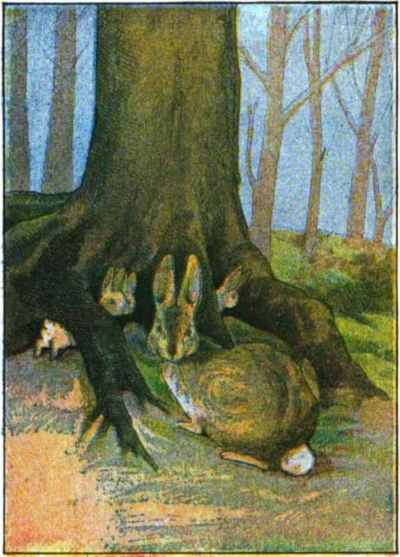
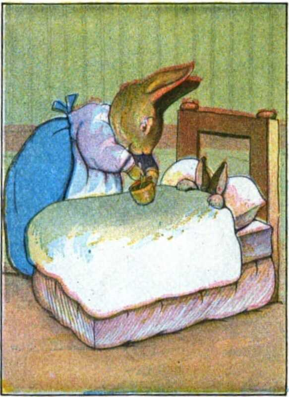
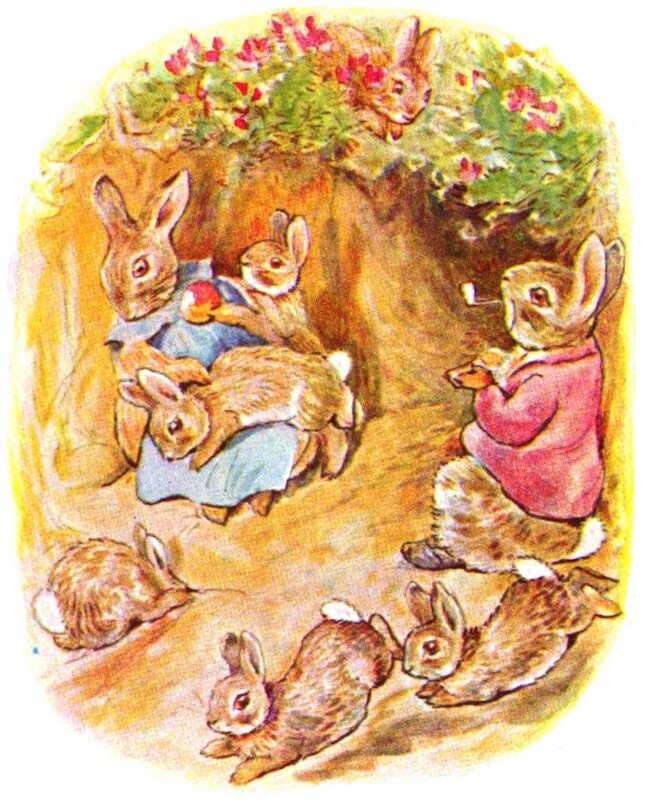
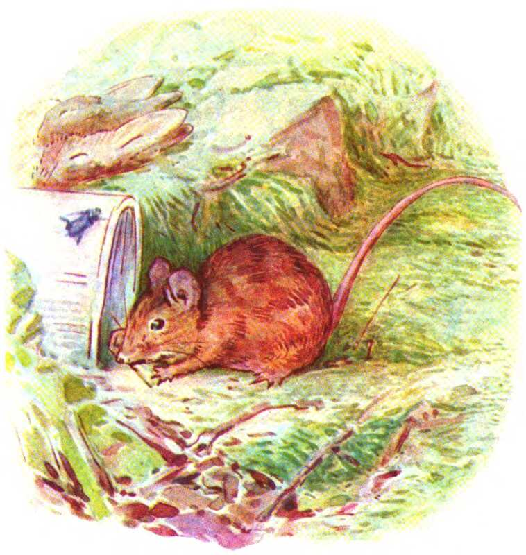
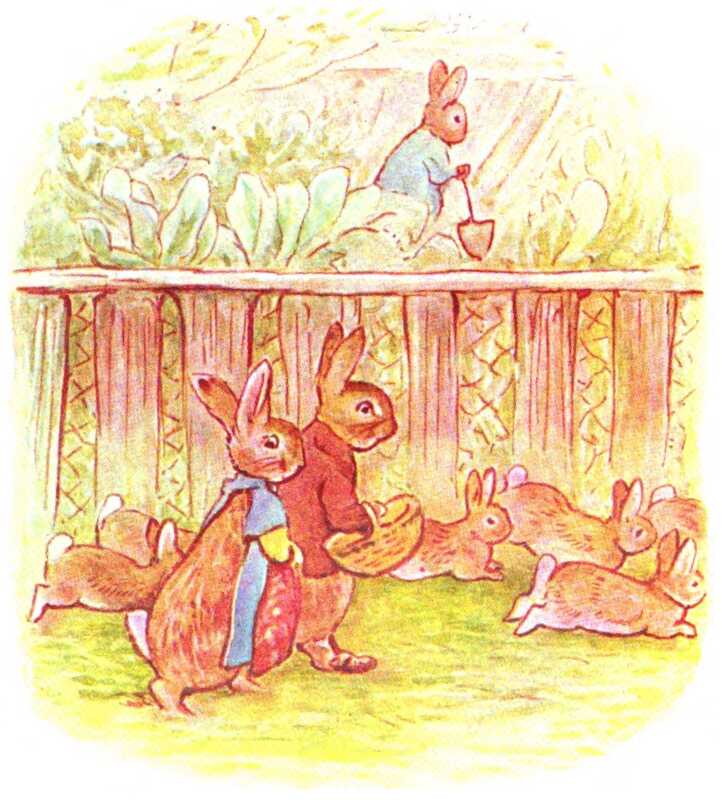
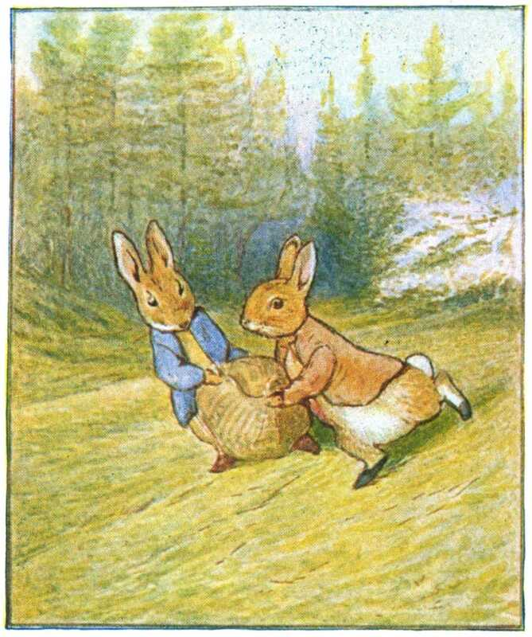
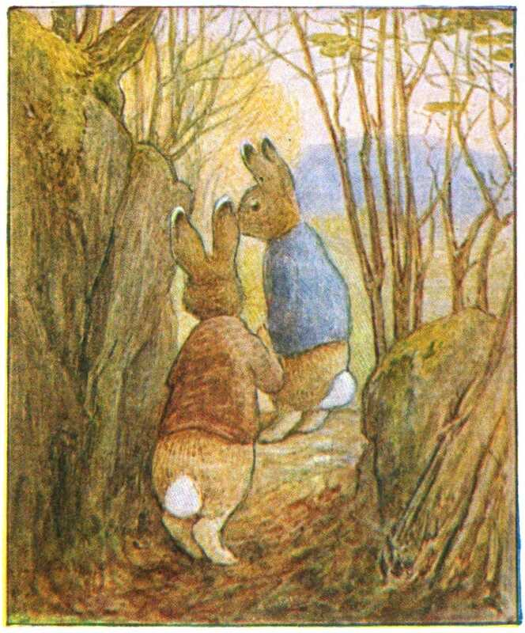
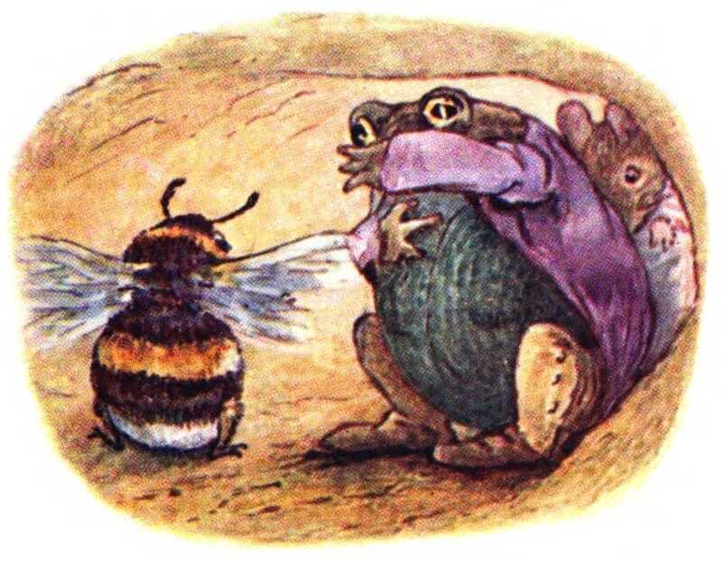

一個家族，五個故事
- Beatrix Potter 的彼得兔世界：五篇故事怎麼連在一起
- 給英文初學者：認識角色、關係、地點和英文原句
- 作者與插畫：Beatrix Potter
Wiki 出處：sources ｜ 氛圍依據：the-wood
· 1 ·
這堂課你會學到
- 問題一：誰是一家人？三代兔子和一隻林鼠
- 問題二：他們長大後變成什麼樣子？
- 問題三：每一篇的危險在哪裡、怎麼脫身？
- 五個英文單字和四題小測驗
- 每一條內容都來自 Wiki，並可追溯到原文段落
氛圍依據：fir-tree-rabbit-hole
· 2 ·
五篇一覽
- ① Peter Rabbit：Peter 不聽話，跑進 McGregor 的花園 ｜ "But Peter, who was very naughty, ran straight away to Mr. McGregor's garden."
- ② Benjamin Bunny：兩隻小兔子回花園拿衣服 ｜ "the proper way to get in is to climb down a pear-tree."
- ③ Flopsy Bunnies：小兔子吃太多萵苣睡著，被裝進麻袋 ｜ "They certainly had a very soporific effect upon the Flopsy Bunnies!"
- ④ Mr. Tod：兩個討人厭的角色，小兔子被偷走 ｜ "a story about two disagreeable people, called Tommy Brock and Mr. Tod."
- ⑤ Mrs. Tittlemouse：愛乾淨的林鼠和不請自來的客人 ｜ "Once upon a time there was a wood mouse, and her name was Mrs. Tittlemouse."
Wiki 出處：peter-rabbit、benjamin-bunny、flopsy-bunnies、mr-tod、mrs-tittlemouse ｜ 氛圍依據：fir-tree-rabbit-hole
· 3 ·
第一章：家族樹
- Peter 和 Benjamin 是表哥/表弟（cousin） ｜ "he had heard about cats from his cousin, little Benjamin Bunny."
- Benjamin 長大後娶了 Flopsy ｜ "When Benjamin Bunny grew up, he married his Cousin Flopsy."
- 他們的孩子統稱 Flopsy Bunnies ｜ "six leetle rabbits!"
- （推論）救了孩子的林鼠，就是第五篇的主角 ｜ "she was called Thomasina Tittlemouse, a wood mouse with a long tail."
Wiki 出處：family-five-stories ｜ 氛圍依據：benjamin-family-rabbit-hole
· 4 ·

上一代兩個家長
- Peter 的媽媽是寡婦 ｜ "Old Mrs. Rabbit was a widow"
- 她警告孩子不准去 McGregor 的花園 ｜ "don't go into Mr. McGregor's garden."
- Benjamin 的爸爸叫 old Mr. Benjamin Bunny ｜ "The name of little Benjamin's papa was old Mr. Benjamin Bunny."
- （推論）第四篇的 old Mr. Bouncer 也是他 ｜ "He lived with his son Benjamin Bunny and his daughter-in-law Flopsy"
Wiki 出處：widow、peter-rabbit、family-five-stories ｜ 氛圍依據：fir-tree-rabbit-hole
· 5 ·
這一代四個兄弟姊妹和一個表親
- Peter 有三個乖巧的手足 ｜ "But Flopsy, Mopsy, and Cottontail had bread and milk and blackberries for supper."
- 她們被稱為乖小兔子 ｜ "who were good little bunnies"
- 第二篇寫到 Benjamin 的阿姨和表親住在最整齊的兔子洞 ｜ "in the neatest, sandiest hole of all lived Benjamin's aunt and his cousins"
- 第一篇 Benjamin 只被提到一次 ｜ "he had heard about cats from his cousin, little Benjamin Bunny."
Wiki 出處：peter-rabbit、flopsy、benjamin-bunny、cousin ｜ 氛圍依據：fir-tree-rabbit-hole
· 6 ·

下一代Benjamin 娶了 Flopsy
- Benjamin 長大後娶了表姊/表妹 Flopsy ｜ "When Benjamin Bunny grew up, he married his Cousin Flopsy."
- 他們孩子很多，不太會存糧但很快樂 ｜ "they were very improvident and cheerful."
- 第四篇他們和 Benjamin 的爸爸住在一起 ｜ "He lived with his son Benjamin Bunny and his daughter-in-law Flopsy"
- Cottontail 嫁給一隻黑兔子，搬到山上 ｜ "Cottontail had married a black rabbit, and gone to live on the hill"
Wiki 出處：family-five-stories、improvident ｜ 氛圍依據：benjamin-family-rabbit-hole
· 7 ·

第五篇怎麼接上？
- 第三篇裡出現一隻長尾巴的林鼠 ｜ "she was called Thomasina Tittlemouse, a wood mouse with a long tail."
- 第五篇的主角也是林鼠 ｜ "Once upon a time there was a wood mouse, and her name was Mrs. Tittlemouse."
- 第五篇出現她的全名 Mrs. Thomasina Tittlemouse ｜ "And without any invitation!"
- （推論）兩篇是同一隻老鼠，原文沒有直接說；第五篇只靠她接上家族故事 ｜ "she was called Thomasina Tittlemouse"
Wiki 出處：family-five-stories、mrs-tittlemouse、thomasina-tittlemouse ｜ 氛圍依據：mrs-tittlemouse-house
· 8 ·

第二章Peter 從調皮到冷靜
- 小時候的 Peter 很調皮，不聽媽媽的話 ｜ "But Peter, who was very naughty"
- 長大後開了自己的苗圃 ｜ "Flopsy's brother, Peter Rabbit, who kept a nursery garden."
- 第四篇換成 Peter 指揮救人 ｜ "Run in, Cousin Benjamin! Run in and get them! while I watch at the door."
Wiki 出處：family-five-stories ｜ 氛圍依據：benjamin-family-rabbit-hole
· 9 ·

第二章Benjamin 從帶路到緊張
- 小時候的 Benjamin 在花園裡很自在 ｜ "Benjamin, on the contrary, was perfectly at home"
- 他教 Peter 怎麼進花園 ｜ "the proper way to get in is to climb down a pear-tree."
- 第四篇孩子被偷，他跑去找 Peter 求助 ｜ "Cousin Peter! Peter Rabbit, Peter Rabbit!"
- （推論）兩人角色互換：這次換 Benjamin 緊張 ｜ "Benjamin Bunny picked his way to the oven nervously"
Wiki 出處：family-five-stories、benjamin-bunny、cousin ｜ 氛圍依據：benjamin-family-rabbit-hole
· 10 ·

第三章危險的源頭是花園
- 第一篇就說了：Peter 的爸爸在花園出了意外 ｜ "Your Father had an accident there; he was put in a pie by Mrs. McGregor."
- Peter 被追時自己扭身逃出，留下外套 ｜ "but Peter wriggled out just in time, leaving his jacket behind him."
- 第二篇兩隻小兔子被貓困住 ｜ "She sat there for five hours."
- Benjamin 的爸爸把貓踢進溫室 ｜ "kicked it into the greenhouse"
Wiki 出處：family-five-stories、greenhouse ｜ 氛圍依據：mr-mcgregors-garden
· 11 ·

第三章垃圾堆與麻袋
- 花園外的垃圾堆什麼都有 ｜ "Mr. McGregor's rubbish heap was a mixture."
- 小兔子睡著了，被 Mr. McGregor 數著裝進麻袋 ｜ "six leetle rabbits!"
- 麻袋被綁起來放在牆上 ｜ "Mr. McGregor tied up the sack and left it on the wall."
- 林鼠咬破麻袋救了他們 ｜ "But Mrs. Tittlemouse was a resourceful person."
Wiki 出處：mr-mcgregors-rubbish-heap、family-five-stories、sack ｜ 氛圍依據：mr-mcgregors-rubbish-heap
· 12 ·

第三章Mr. Tod 的家
- 第四篇的壞角色是兩隻動物 ｜ "a story about two disagreeable people, called Tommy Brock and Mr. Tod."
- 兔子遠遠就聞得到 Mr. Tod ｜ "they could smell him half a mile off."
- 他的家又可怕又暗 ｜ "It was a shocking place, and very dark."
- 小兔子被關在烤爐裡，後來被 Peter 和 Benjamin 救出 ｜ "The young family were alive; shut up in the oven!"
Wiki 出處：mr-tod、mr-tod-character、family-five-stories ｜ 氛圍依據：bull-banks-house
· 13 ·

第三章Mrs. Tittlemouse 的家
- 她非常愛乾淨 ｜ "Mrs. Tittlemouse was a most terribly tidy particular little mouse"
- 不請自來的蜜蜂佔了她的儲藏室 ｜ "I am not in the habit of letting lodgings; this is an intrusion!"
- 客人走後，她大掃除了兩週 ｜ "began a spring cleaning which lasted a fortnight."
- （推論）這篇的危險換成了家被弄亂 ｜ "And without any invitation!"
Wiki 出處：tidy、mrs-tittlemouse ｜ 氛圍依據：mrs-tittlemouse-house
· 14 ·
五篇的共同模式
- （推論）每篇都有危險，第一篇 Peter 自己逃出來 ｜ "but Peter wriggled out just in time, leaving his jacket behind him."
- 第二篇靠 Benjamin 的爸爸 ｜ "When old Mr. Bunny had driven the cat into the greenhouse, he locked the door."
- 第三篇靠林鼠 ｜ "But Mrs. Tittlemouse was a resourceful person."
- 第四篇靠長大的 Peter 和 Benjamin ｜ "Run in, Cousin Benjamin! Run in and get them!"
- 安全的地方是樹林和家 ｜ "was safe at last in the wood outside the garden."
Wiki 出處：family-five-stories、benjamin-bunny、resourceful ｜ 氛圍依據：the-wood
· 15 ·
單字複習
- cousin 表（堂）兄弟姊妹："he married his Cousin Flopsy."
- naughty 調皮的："But Peter, who was very naughty"
- sack 麻袋："Mr. McGregor tied up the sack and left it on the wall."
- resourceful 足智多謀的："But Mrs. Tittlemouse was a resourceful person."
- oven 烤爐："The young family were alive; shut up in the oven!"
Wiki 出處：cousin、naughty、sack、resourceful、oven ｜ 氛圍依據：fir-tree-rabbit-hole
· 16 ·
小測驗
- Q1：Peter 和 Benjamin 是什麼關係？ → cousin，表哥/表弟
- Q2：誰咬破麻袋救了 Flopsy Bunnies？ → 林鼠 Thomasina Tittlemouse
- Q3：第四篇小兔子被關在哪裡？ → Mr. Tod 家的烤爐
- Q4：第五篇靠誰接上家族故事？ → Thomasina Tittlemouse（推論兩篇是同一隻）
Wiki 出處：family-five-stories ｜ 氛圍依據：fir-tree-rabbit-hole
· 17 ·
出處
- 整合答案存在 Wiki 的 query 頁：family-five-stories
- 原文：Standard Ebooks 版 Beatrix Potter《Short Fiction》
- 作者兼插畫家 Beatrix Potter，1943 年過世，台灣著作權保護期已屆滿
- 標（推論）的是 Wiki 依原文推出來的，原文沒有直接寫
- 本簡報每一條文字都來自「英文經典讀本 Wiki」，並可追溯到原文段落
Wiki 出處：family-five-stories、sources ｜ 氛圍依據：fir-tree-rabbit-hole
· 18 ·